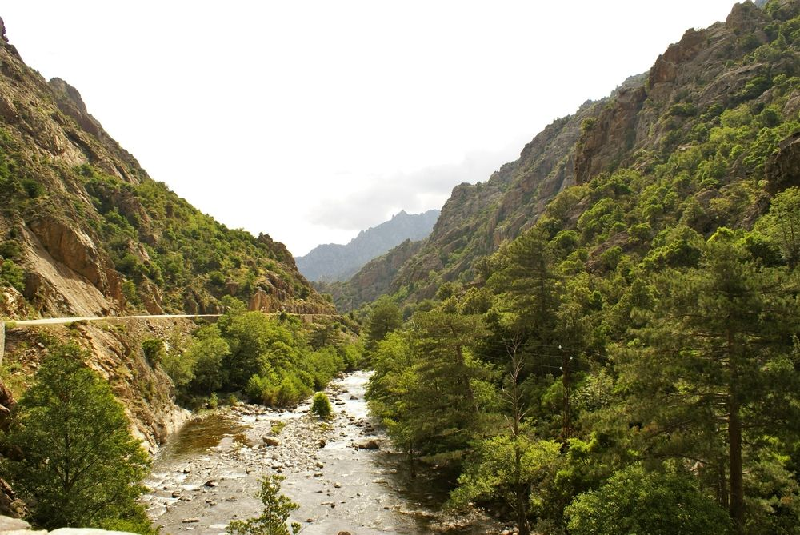

Ahogy mélyebbre hatolunk az Asco-völgyben, a táj drámai módon átalakul, és az alsó szakaszhoz érve eléri leginkább monumentális, szinte fenyegető formáját. A monumentális, sötét tónusú gránit- és porfírfalak ezen a ponton annyira összeszűkülnek, hogy a napfény is csak a déli órákban képes teljesen bevilágítani a kanyon mélyét. A D147-es út itt valósággal beletapad a függőleges sziklákba, miközben az utazó feje felé nyúló masszív kőívek és a beláthatatlan, technikás kanyarok a nyers, megalkuvást nem tűrő korzikai hegyvidék klausztrofób, mégis lenyűgöző atmoszféráját közvetítik.
A szurdok alsó szakaszának legfontosabb kultúrtörténeti ékköve az a magányosan álló genovai híd, amely tökéletes, kecses ívvel hidalja át a dühöngő folyót. Ezek az ódon kőhidak a Genovai Köztársaság korában nem csupán egyszerű átkelők voltak, hanem a sziget gazdasági gerincét jelentő szezonális állatterelés, a transhumance elengedhetetlen stratégiai pontjai. A pásztorok minden tavasszal ezeken a keskeny, mégis elnyűhetetlen építészeti remekműveken keresztül hajtották fel nyájaikat a part menti, kiszáradó síkságokról a Niolo és az Asco hűvös, dús legelőire, dacolva a zord terepviszonyokkal és a természet kiszámíthatatlanságával.
Az Asco folyó ezen a szűk szakaszon mutatja meg igazi, zabolátlan karakterét, ahol a mederben felhalmozódott gigantikus, simára csiszolt kőtömbök állandó akadálypályát képeznek a rohanó víztömegnek. A mélybe tekintve lenyűgöző látványt nyújtanak a természetes sziklamedencék (piscines naturelles), amelyekben a jéghideg, kristálytiszta víz mély smaragdzöld és türkiz árnyalatokban kavarog, mielőtt újabb örvényekkel törne előre a völgy bejárata felé. Ez a vadvízi szimfónia, a folyó morajlása és a sziklákról visszaverődő akusztika egy olyan komplex érzékszervi élménnyé formálja a kanyont, amely a vadvízi kalandorok és a csendet kereső vándorok számára egyaránt katartikus megállássá teszi a helyszínt.